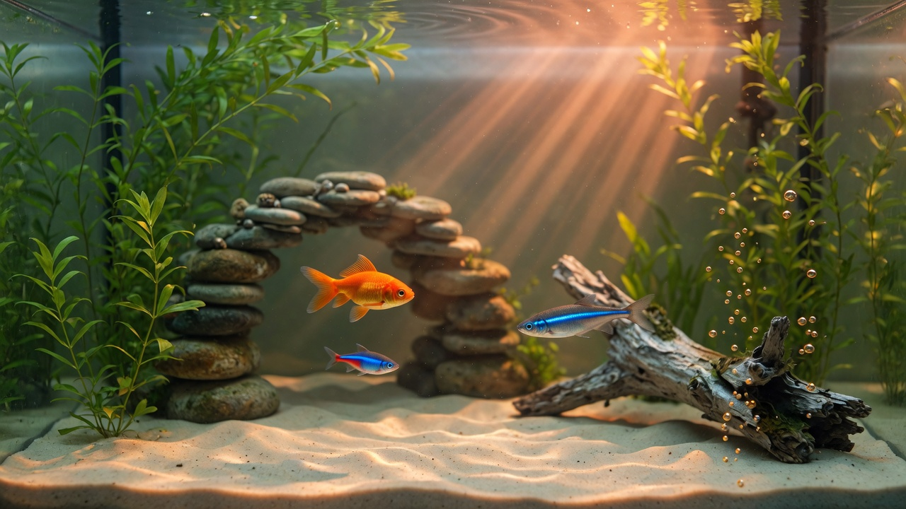

Fish Tank
day 0 pts PayPal Patreon Life hall Hub0fish
0hunters
0 htank up
0 hlongest fish
0 hhall fish
25.0°water
0%algae
100quality
92%oxygen
0eggs
gen 1lineage
Water is steady.

Δ9Φ963 · chatagent.ca
Home · who keeps it
Three gifts
Choose three gifts.
Tank
Mode
Three starters
Choose three.
Instructions
Optional. The tank stays free. A tip never buys a fish or a longer life.
Water is steady.
Fish
Options
A new hour
The birth, eat, and battle clock just turned. The tank is still free. A donation is optional, and it funds more fish, more tanks, and more options.